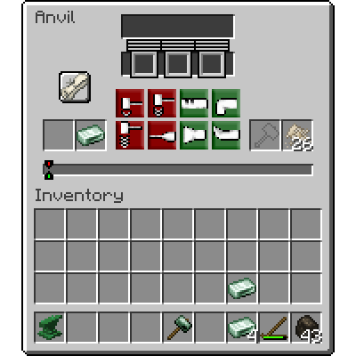
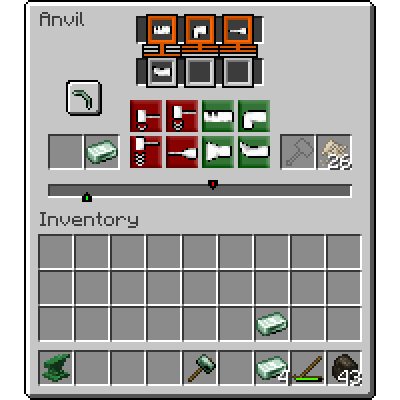

Наковальни
Наковальни
Наковальни являются важным инструментом, необходимым для металлообработки, поскольку они позволяют вам обрабатывать и сваривать металлические слитки в различные формы.
Наковальни полезны как для обработки, которая используется для превращения одного куска металла в другой, так и для сварки, которая используется для слияния двух металлических предметов в один цельный кусок.
Структура
Все типы металлических наковален.


Наковальни можно изготовить из двойных слитков соответствующего металла. Для вашей первой наковальни вы должны сварить двойные слитки на каменной наковальне.
У каждой наковальни есть уровень, который определяет, с какими типами материалов она может работать и сваривать. Наковальня может обрабатывать металлы своего текущего уровня, и она может сваривать металлы, которые на один уровень выше.
- Уровень 0: камень
- Уровень I: медь
- Уровень II: бронзы
- Уровень III: кованое железо
- Уровень IV: сталь
- Уровень V: чёрная сталь
- Уровень VI: цветные стали
Обработка
Для работы с предметом на наковальне вам нужно открыть интерфейс наковальни, представленный справа. Слева есть два слота для предметов — для обработки целевой предмет должен находиться в правом слоте. Для работы вам понадобится молоток, либо в слоте для молотка справа, или в вашей основной руке. Молоток будет постепенно изнашиваться по мере работы с металлом.
Интерфейс наковальни.
Затем вам нужно будет выбрать план, который определяет, какой предмет вы хотите создать. Нажмите ЛКМ по кнопке прокрутки, а затем выберите один из предметов для создания. Интерфейс наковальни вернется, но теперь вы выбрали план — на прокрутке будет показан предмет, который вы собираетесь создать, и правила и цель теперь будут заполнены.
После выбора создания кирки.
Цели
В середине интерфейса наковальни есть полоса с двумя цветными индикаторами. Зеленый указатель — это ваш текущий прогресс работы. Красный указатель — это цель. Ваша задача — совместить текущий прогресс с целью.
Для этого вы можете использовать зеленые и красные кнопки действий, которые перемещают ваш текущий прогресс на определенное количество, в зависимости от предпринятого действия.
Зелёные действия всегда перемещают вашу цель вправо, а красные действия всегда перемещают вашу цель влево. Обратите внимание, что если вы переместите вашу цель за пределы полосы прогресса, вы переработаете ваш предмет — потеряете его. Однако, во время работы, вы также должны соответствовать правилам...
Правила ковки
Правила — это два или три значка, показанных в верхней части интерфейса наковальни. Они представляют конкретные действия, которые должны быть выполнены в определенное время, чтобы ваша работа была успешной. Например, правило может быть согнуть предпоследним, то есть предпоследнее действие, которое вы предпринимаете, должно быть действием сгибания.
Ваши последние три действия показаны прямо под правилами. Когда правило удовлетворено, его контур изменится на зеленый. Ковка будет считаться успешной, когда все правила удовлетворены.
Учитывайте температуру вашего предмета. Металлы можно обрабатывать только тогда, когда они нагреты до определённой температуры, когда в подсказке показано "Можно ковать". Вы можете вынуть предмет и снова нагреть его, прогресс при этом сохранится.
Бонусы ковки
Ковка может быть утомительной, но за эффективность предусмотрена награда. Некоторые предметы, такие как головки инструментов, при обработке с минимальным или низким количеством шагов, получают бонус ковки в зависимости от того, насколько эффективно они были выкованы. Этот бонус затем применяется к инструментам. Например, это может сделать вашу кирку быстрее и прочнее.
Идеально выковано
Предмет: tfc:metal/pickaxe/wrought_iron[tfc:forging_bonus={type:"perfect"}]
Существует четыре уровня бонуса ковки:
- Плохо выковано
- Хорошо выковано
- Мастерски выковано
- Идеально выковано
Эти бонусы увеличивают мощность вашего инструмента — делая его прочнее, быстрее и/или более смертоносным, в зависимости от инструмента.
Сварка
Сварка — это процесс, при котором два предмета сваривают вместе, создавая новый предмет. Сварка работает одинаково как на каменной наковальне, так и на металлических наковальнях.
Сначала вы должны поместить два предмета, которые хотите сварить, на наковальню. Это можно сделать используя предметы на наковальне или открыв интерфейс наковальни и положив их в два левых слота.
Вам также понадобится как минимум один флюс в наковальне. Когда оба предмета достаточно нагреты для сварки — в подсказке будет написано "Можно сварить" — нажмите ПКМ по наковальне любым молотком с зажатым Shift. Вы услышите звук молотка, а предметы будут сварены вместе. Результат сварки можно извлечь, используя ПКМ на наковальне с пустой рукой.